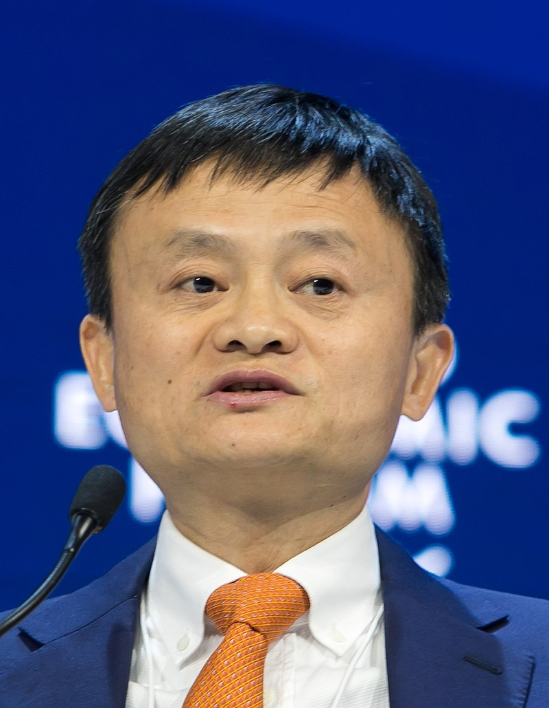
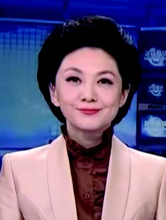

Voice Clone for Mandarin and Cantonese
by Tam U Hoi, Ocean
Objective
Implement voice cloning for Mandarin and Cantonese by Neural Network based on
Real time voice cloning and
SV2TTS2.
Basic Structure
A three-stage pipeline
Speaker encoder for extracting speaker characteristics.
Synthesizer for generating mel-spectrogran from text.
Vocoder for generating the waveform form mel-spectrogran.

Voice Cloning on Mandarin
We have achieved voice cloning on Mandarin
Someone in training set


Sample
漢語拼音
今天天氣很好
澳門每人發十萬塊吧
Voice Cloning on Cantonese
The Cantonese models can not cloning an unseen speaker very well
The possible reason is that the diversity of the data set is relatively limited
Sample
廣東話拼音
今日天氣好好
我坐巴士返學
Cross-language Synthesis
We tried to synthesize Mandarin with the model of Cantonese, and synthesize Cantonese with the model of Mandarin.